의료전자기능사 (2014-07-20 기출문제)
1과목: 임의 구분
1. 다음 중 피부가 인지하는 자극이 아닌 것은?
- 차가움
- 뜨거움
- 눌림
- 단맛이 남
(정답률: 91%)

2. 다음 중 지방을 소화시키는 담즙을 생성하는 기관은?
- 비장
- 간
- 췌장
- 위
(정답률: 72%)
3. 인체 내에서 발생하는 생체신호의 종류가 아닌 것은?
- 생체전기신호
- 생체역학신호
- 생세음향신호
- 생체환경신호
(정답률: 69%)
4. 심장 전위의 발생 및 전도 순서가 옳은 것은?
- 방실결절 → 동방결절 → 히스 속 → 푸르킨예 섬유 → 심실근
- 동방결절 → 방실결절 → 히스 속 → 푸르킨예 섬유 → 심실근
- 방실결절 → 동방결절 → 심실근 → 푸르킨예 섬유 → 히스 속
- 동방결절 → 방실결절 → 심실근 → 히스 속 → 푸르킨예 섬유
(정답률: 62%)
5. 생체에서 발생하는 전위는 극히 미약하여 생체신호의 계측이 용이하지 않다. 또한 인간을 대상으로 하기 때문에 안정성을 충분히 고려하여 측정이 이루어져야 한다. 생체 전기현상에 이용되는 증폭기 중 이 때 필요한 증폭기는?
- 차동증폭기
- 전치증폭기
- 고감도 증폭기
- 고입력 임피던스 증폭기
(정답률: 54%)
6. 40[dB]의 전압이득을 갖는 증폭기의 입력전압이 1[mV]일 때 출력전압은?
- 1[mV]
- 10[mV]
- 100[mV]
- 1,000[mV]
(정답률: 53%)
7. 다음 의학 용어 중 “좁아지거나 수축됨”을 뜻하는 접미사는?
- -stenosis
- -ptosis
- -pathy
- -algia
(정답률: 63%)
8. 심전도 기록지 속도가 50[mm/s]일 때 평균 RR 간격이 10[mm]일 경우의 심박수는?
- 100[BPM]
- 150[BPM]
- 200[BPM]
- 300[BPM]
(정답률: 46%)
9. 생체계측기 설계 시 고려사항이 아닌 것은?
- 신호적 요소
- 환경적 요소
- 의학적 요소
- 입력임피던스
(정답률: 65%)
10. 선택적 투과성 막을 사이에 두고 물의 농도차가 있을 때 농도가 낮은 곳에서 높은 곳으로 물이 이동하는 현상을 무엇이라 하는가?
- 확산
- 활동 전위
- 삼투
- 휴지기
(정답률: 68%)
11. 다음 중 뼈의 기능에 해당하지 않는 것은?
- 운동 역할
- 무기물의 생성 역할
- 조직의 지지대 역할
- 내부 장기 및 신경 근육의 보호 역할
(정답률: 73%)
12. 심혈관계 내에 와류가 발생하여 들리는 심음으로 진단에 사용하는 것은?
- Pressure
- Balloon
- Murmur
- Strain
(정답률: 60%)
13. 다음 중 해부학적 평면의 설명으로 옳지 않은 것은?
- 정중면-우리 몸을 앞뒤 대칭으로 이등분하여 나누는 면이다.
- 시상면-우리 몸을 전후 방향인 세로로 절단해 인체 좌우로 나누는 면이다.
- 관상면-우리 몸을 이마에 평행이 되게 나누는 면이다.
- 횡단면-우리 몸을 위, 아래로 나누는 면으로 지면에 수평이 되게 나누므로 수평면이라고도 한다.
(정답률: 54%)
14. 신체에 센서를 삽입하여 생체신호를 측정하는 방식은?
- 외부측정
- 침습적 측정
- 샘플측정
- 표면측정
(정답률: 62%)
15. 간접 혈압 측정에서 커프의 압력과 동맥압이 일치하면 미세한 동맥혈관 틈을 통하여 혈액이 흐르게 되고 이때 음을 발생시키게 되는데 이 소리를 무엇이라고 하는가?
- Microphone sound
- Diastolic sound
- Systolic sound
- Korotkoff sound
(정답률: 50%)
16. 뇌전도(EEG) 신호는 주파수 대역별로 분리하여 이름을 붙인다. 다음 중 가장 높은 주파수 대역의 파형은?
- 알파(α)파
- 베타(β)파
- 세타(θ)파
- 델타(δ)파
(정답률: 55%)
17. 다음 중 혈류량 측정에 사용할 수 있는 가장 적절한 효과는?
- 도플러 효과
- 펠티어 효과
- 광전 효과
- 홀 효과
(정답률: 69%)
18. 심장의 수축에 따른 활동전류를 체표면에서 측정, 기록한 것을 의미하는 것은?
- 뇌전도(EEG)
- 안전도(EDG)
- 심전도(ECG,EKG)
- 근전도(EMG)
(정답률: 84%)
19. 다음 접두사 중 “여분의~”란 의미를 가진 것은?
- ein-
- ecto-
- extra-
- en-
(정답률: 78%)
20. 다음 중 체온 측정 장치에 사용할 수 있는 센서는?
- 서미스터
- 로드셀
- 스트레인 게이지
- CdS
(정답률: 66%)
2과목: 임의 구분
21. 다음 중 물리적 센서에서 측정하는 양으로만 이루어진 것은?
- 변위 - 힘
- 힘 - 수소이온농도
- 산소분압 - 온도
- 변위 - 산소농도
(정답률: 60%)
22. 다음과 같은 진리표를 나타내는 게이트는?
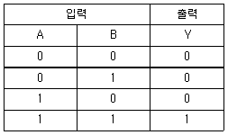
- NOT
- OR
- AND
- NOR
(정답률: 66%)
23. 오실로스코프에서 출력된 펄스파형의 크기가 가운데 0점을 기준으로 위로 3.5칸이었다. 오실로스코프의 Volt/div가 1[V]였다면 V(p-p)는 얼마인가?
- 5[V]
- 6[V]
- 7[V]
- 8[V]
(정답률: 69%)
24. 반도체에 대한 설명으로 옳지 않은 것은?
- n형 반도체는 다수 반송자가 전자이다.
- p형 반도체는 다수 반송자가 정공이다.
- n형 반도체는 불순물을 5가 원소를 사용한다.
- p형 반도체는 불순물을 2가 원소를 사용한다.
(정답률: 50%)
25. 관절의 운동 형태에 따른 설명으로 옳은 것은?
- 신전(extension) - 구부리는 것
- 내반(inversion) - 바깥쪽으로 도는 것
- 외전(abduction) - 정중면으로 가까워지는 운동
- 외측회전(external rotaion)-축에서 바깥쪽으로 회전하는 운동
(정답률: 60%)
26. 생체 표면 전극에 대한 설명 중 틀린 것은?
- 전극으로부터 잡음이 발생될 수도 있다.
- 전극 표면 물질은 절연 물질도 사용된다.
- 전극 접촉저항은 면적에 비례한다.
- 전극에 부착되어 있는 페이스트는 피부의 임피던스를 낮춘다.
(정답률: 44%)
27. 금속재료를 영구적으로 결합하는 데 사용되는 막대 모양의 결합용 기계요소는?
- 리벳
- 너트
- 와셔
- 클러치
(정답률: 47%)
28. 활동전위 생성의 초반기에 외부에서 주어진 자극에 대해서 그 크기에 관계없이 새로운 활동전위를 발생시키지 못하는 구간을 무엇이라 하는가?
- 포화기
- 부족기
- 절대 불응기
- 상대 불응기
(정답률: 63%)
29. 1[C]의 전기량이 두 점 사이를 이동하여 24[J]의 일을 하였다면, 두 점 사이의 전위차는 몇 [V]인가?
- 12[V]
- 24[V]
- 26[V]
- 48[V]
(정답률: 63%)
30. 다음 회로에서 미지의 저항 X의 값은 얼마인가? (단, R1=10[Ω], R2=100[Ω], R3=20[Ω], V=10[V], 검류계 G에는 전류가 흐르지 않는다.)
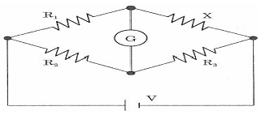
- 1[Ω]
- 2[Ω]
- 10[Ω]
- 100[Ω]
(정답률: 72%)
31. 다음 중 하나의 IC 패키지에 빛을 발생하는 발광부와 빛을 받아들이는 수광부(포토트랜지스터)를 봉입시킨 소자로서 잡음으로부터 출력의 에러나 소자의 손상을 방지하기 위한 것은?
- LED
- 다이오드
- 트랜지스터
- 포토커플러
(정답률: 58%)
32. 여러 가지 의료생체센서에서의 측정량 중 GAS 센서를 이용한 장치는?
- 태아 심음
- 산소측정기
- 관혈식 혈압계
- 뇌압계
(정답률: 52%)
33. 물질에 물리적 힘을 인가하면 전위가 발생하고 전압을 인가하면 변형이 생기는 성질을 이용한 센서를 무엇이라 하는가?
- 온도 센서
- 압전 센서
- 유도성 센서
- 정전용량 센서
(정답률: 71%)
34. 저항률을 p, 도전율을 o, 도체의 길이를 1[m], 도체의 단면적을 A[m2]라 할 때 R은?
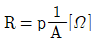
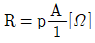
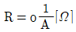
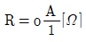
(정답률: 50%)
35. 망막(retina)에 대한 설명으로 옳지 않은 것은?
- 광수용체와 망막속신경으로 이루어져 있다.
- 수정체로 인해서 초점을 맞춘다.
- 상하 좌우 반전된 상이 망막에 투시된다.
- 망막은 전체적으로 3mm 두께 이상의 얇은 막이다.
(정답률: 59%)
36. 다음 각종 소자 기호와 명칭이 옳게 연결된 것은?
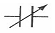
: 트랜지스터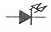
: LED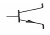
: 콘덴서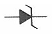
: 사이리스터
(정답률: 68%)
37. 동력을 전달시키는 기계요소와 가장 거리가 먼 것은?
- 마찰차
- 체인과 스프로킷 휠
- 나사
- 벨트
(정답률: 70%)
38. 정류회로의 종류 중에서 하나의 정류다이오드와 교류전원 부하저항이 연결되어 구성되는 회로로 입력 교류전압의 양(+)의 반주기 동안은 다이오드가 도통되어 출력이 나타나고 음(-)의 반주기는 출력이 없는 회로의 명칭은?
- 반파 정류회로
- 전파 정류회로
- 브리지 정류회로
- 정전압 조정회로
(정답률: 43%)
39. 다음 중 인체에 사용하는 전극의 재료로 적당하지 않은 것은?
- 철(Fe)
- 백금(Pt)
- 금(Au)
- 정전압 조정회로
(정답률: 54%)
40. 파골세포(osteoclast)의 역할과 관련이 없는 것은?
- 뼈를 파괴한다.
- 뼈 안쪽의 골세포를 용해시킨다.
- 골수강의 크기를 증가시킨다.
- 혈종에 침투하여 섬유소그물망을 형성한다.
(정답률: 46%)
3과목: 임의 구분
41. 재택진단기기로 측정 가능한 생체신호로 옳은 것은?
- 안압
- 뇌압
- 근유발전위
- 혈중산소포화농도
(정답률: 71%)
42. 다음 논리회로에 의한 논리식이 옳은 것은?
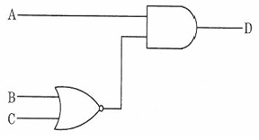
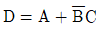
- D=(A+B)(A+C)
- D=AB+C
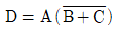
(정답률: 53%)
43. 진단용 방사선 발생장치의 검사를 받아야 하는 기준이 아닌 것은?
- 검사를 받은 후 2년이 지난 경우
- 진단용 방사선 발생장치의 전원시설을 변경하는 경우
- 진단용 방사선 발생장치의 안전에 영향을 줄 수 있는 X-선관을 교체하는 경우
- 진단용 방사선 발생장치를 설치하거나 이전하여 설치하는 경우
(정답률: 45%)
44. 인공심폐기의 구성요소가 아닌 것은?
- 저혈조(blood reservoir)
- 증류수(distilled water)
- 열과환기(heat exchanger)
- 정맥 캐튤라(venous cannulae)
(정답률: 57%)
45. 의료기기법에서 정의한 “기술문서”에 포함되는 내용이 아닌 것은?
- 원자재
- 사용목적
- 사용방법
- 대차대조표
(정답률: 55%)
46. 의료법에서 지정한 “의료인”에 포함되는 내용이 아닌 것은?
- 의사
- 의공기사
- 조산사
- 치과의사
(정답률: 55%)
47. 치료 및 재활용으로 쓰이는 전기자극은 전원장치에서 직류나 교류 전원을 신호발생기에 공급하여 생성된다. 이 신호발생기의 구성요소가 아닌 것은?
- 증폭기
- 여과기
- 변압기
- 정류기
(정답률: 41%)
48. MRI(자기공명영상)의 일반적인 특징에 대한 설명으로 틀린 것은?
- 검사료가 싸며, 촬영시간이 오래 걸리지 않는다.
- X-ray처럼 이온화 방사선이 아니므로 인체에 무해하다.
- 필요한 각도의 영상을 검사자가 선택하여 촬영할 수 있다.
- 컴퓨터 단층촬영(CT)에 비해 대조도와 해상도가 더 뛰어나다.
(정답률: 59%)
49. 다음 중 순서도 기화와 용도가 옳지 않은 것은?
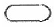
: 순서도의 시작과 끝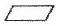
: 변수의 초기화 및 준비사항 기입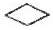
: 조건, 비교, 판단, 분기 등 결정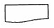
: 서류를 매체로 하는 출력
(정답률: 44%)
50. 전기치료 및 재활치료에서 열의 전달 방법에 의한 분류 중 열등이나 적외선 빛에서 주로 일어나는 열의 전달방식은?
- 전도
- 대류
- 응해
- 복사
(정답률: 47%)
51. 세라믹 소자에 고주파를 인가하여 발생하는 초음파를 이용하는 방식의 체외충격파 쇄석기는?
- 수중방전 방식
- 미소발파 방식
- 전자진동 방식
- 압전소자 방식
(정답률: 46%)
52. 입원환자가 400명인 종합병원의 경우, 최소한으로 필요한 당직의사의 수는 몇 명 인가?
- 1명
- 2명
- 4명
- 10명
(정답률: 60%)
53. 다음 중 정보사회의 특징에 대한 설명으로 옳지 않은 것은?
- 정보과학, 정보기술이 급속하게 진보한다.
- 유통되는 정보의 양이 폭발적으로 증가한다.
- 인간의 존엄성과 자유에 대한 가치추구가 제한되고 통제된다.
- 사회활동에서 고도의 정보통신기술이 활용되고 자동화가 촉진되어 노동의 개념이 달라진다.
(정답률: 66%)
54. 다음 중 C 언어에서 사용되는 연산자의 설명이 틀린 것은?
- == : 같음
- % : 나머지
- + : 증가 연산자
- && : AND
(정답률: 46%)
55. 다음 중 의료기사의 종류에 해당되지 않는 것은?
- 간호조무사
- 임상병리사
- 방사선사
- 치과위생사
(정답률: 61%)
56. 환자기록의 개념을 위한 원형적인 코드체계이며 3자리 코드를 근간으로 하고 있는 분류체계는?
- ICD(국제질병분류)
- SNOMED(체계화된 의학 및 수의학용 명명법)
- ICPC(국제의료행위분류)
- UMLS(통일의학용어시스템)
(정답률: 50%)
57. X-선관 양극에 축적되는 열용량(Heat Unit)과 관계 없는 것은?
- 관전류[mA]
- 관전압[kvp]
- 음극온도
- 노출시간[sec]
(정답률: 44%)
58. 심박동수가 60[BPM]이고, 1회 심박출량이 70[ml/beat]인 성인의 심박출량(CO) 표기로 옳은 것은?
- 70[ml]
- 70[ml/beat]
- 4.2[l/min]
- 42[l/min]
(정답률: 53%)
59. 의료기기의 생물학적 평가에 있어 단기적인 영향을 검사하는 사항이 아닌 것은?
- 자극성 시험
- 혈전형성 시험
- 발암성 시험
- 용혈성 시험
(정답률: 43%)
60. 인공호흡기에 대한 설명 중 옳은 것은?
- 장시간 기관 내 튜브를 삽입함으로써 후두 손상이나 심각한 위장관 팽만이 올 수 있다.
- 1분당 전달되는 인공호흡기의 평균 호흡 수는 40~50[회/min]이다.
- 간헐적 강제 환기 방식(IMV)은 대상자의 자발적인 호흡능력이 없을 때 사용한다.
- 인공호흡기는 환기를 제공함으로써 손상된 폐를 치료한다.
(정답률: 36%)